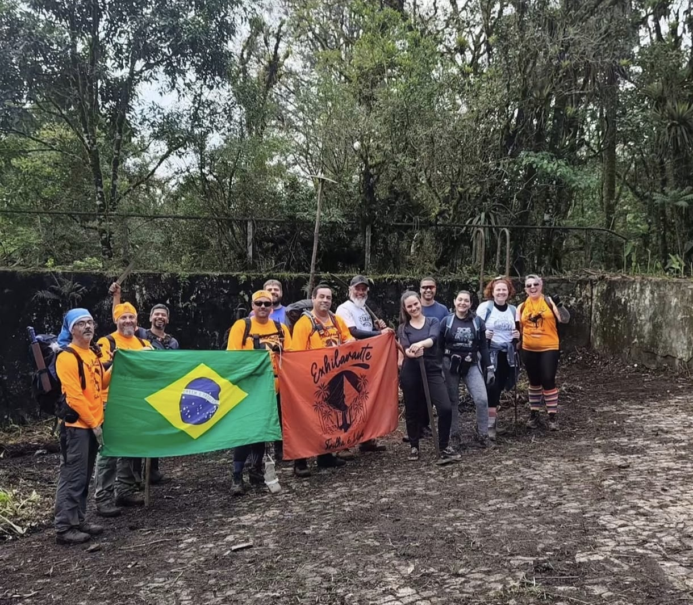
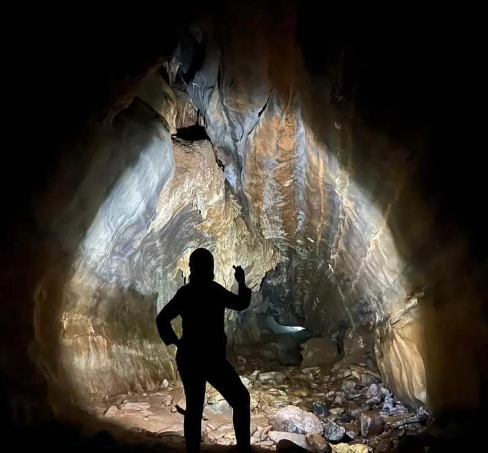
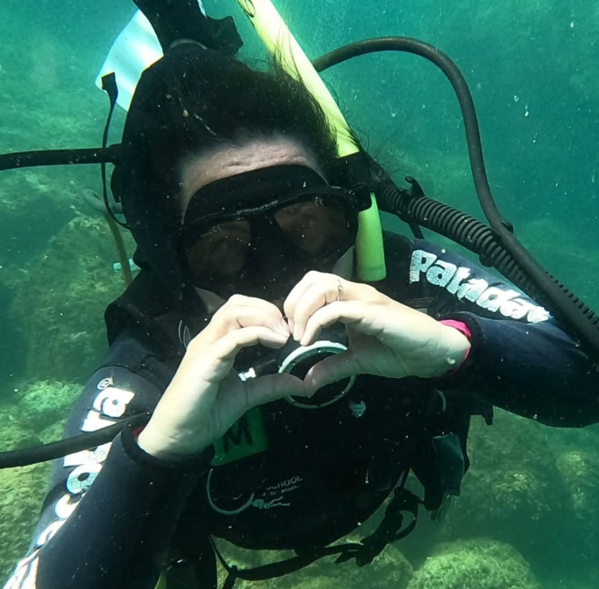
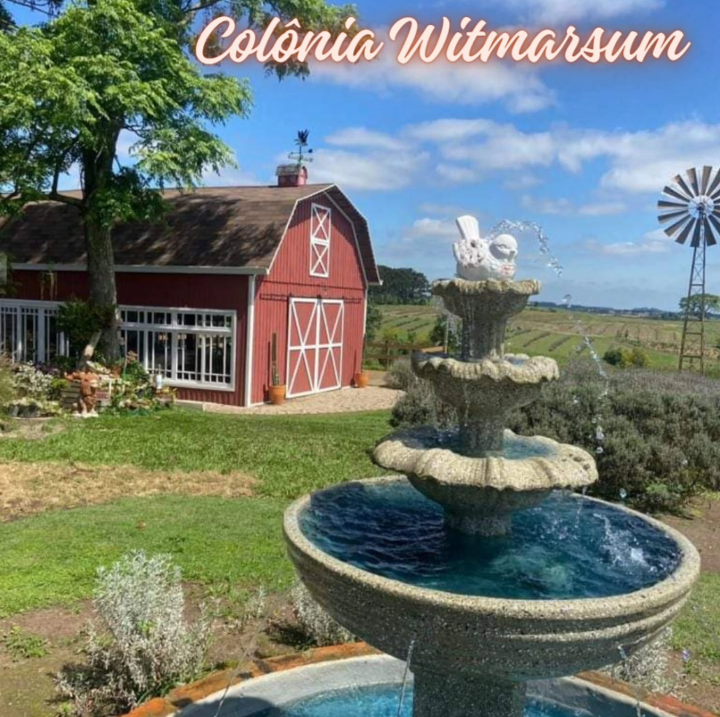
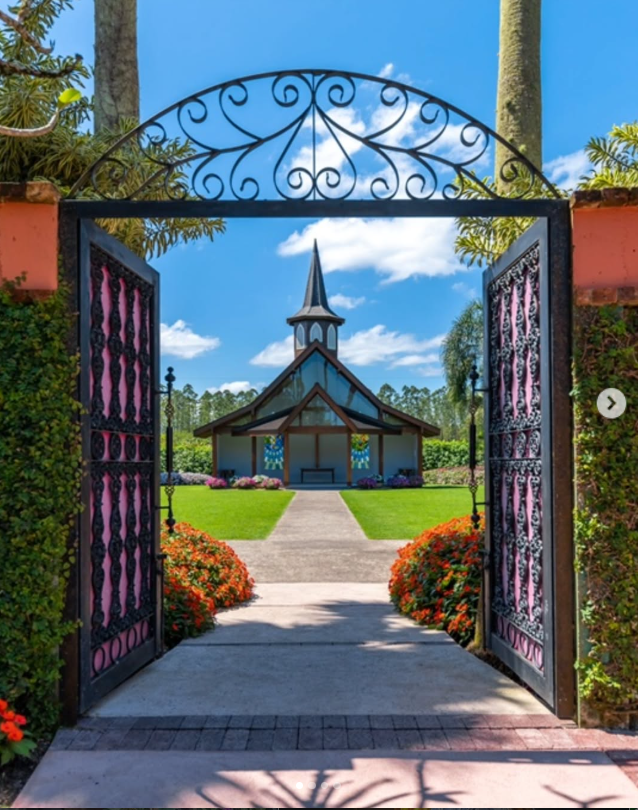

Fundada em 2023, a Natrilha Turismo nasceu do desejo de aproximar pessoas da natureza por meio de experiências únicas de ecoturismo e aventura. Cada viagem é pensada para valorizar a cultura local, promover a sustentabilidade e garantir momentos de conexão genuína com o meio ambiente. Mais do que roteiros, oferecemos histórias e lembranças que ficam para sempre.

Trilha Cavernas PETAR – Núcleo Santana (Iporanga/SP, 12 de Setembro) Um dia de aventura em meio às cavernas e cachoeiras do PETAR. Caminhar por trilhas, explorar formações rochosas e se encantar com a natureza exuberante tornam essa experiência inesquecível. O mirante Rosa dos Ventos completa o cenário com uma vista de tirar o fôlego.

Batismo de Mergulho – Bombinhas/SC (07 de Setembro e 15 de Novembro) Uma jornada em alto-mar que mistura passeio de barco e mergulho com cilindro. Entre peixes coloridos e águas cristalinas, cada momento é marcado pela sensação única de descobrir um mundo subaquático cheio de vida e tranquilidade.

Colônia Witmarsum – Campos Gerais (19 de Setembro) Um roteiro cultural e gastronômico que conecta tradição e sabores. Degustar pães artesanais, cafés especiais, chocolates e vinhos locais, além de conhecer lavandários e queijarias, faz dessa viagem uma verdadeira imersão na cultura e na hospitalidade da região.

Parque Hemero – Joinville/SC (19 de Julho, Florada dos Girassóis) Um espetáculo natural em meio à cidade das flores. A florada dos girassóis transforma o parque em um cenário vibrante e acolhedor, perfeito para contemplar, fotografar e sentir a energia da natureza em sua forma mais viva.